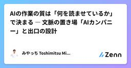
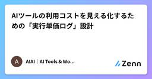
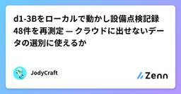
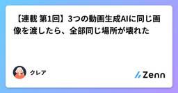
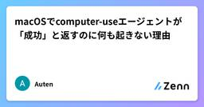
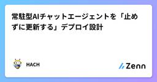

Zennの「AI」のフィード
フィード

AIの作業の質は「何を読ませているか」で決まる ― 文脈の置き場「AIカンパニー」と出口の設計
Zennの「AI」のフィード
同じAIに、同じクライアントへのメールの返信を頼んでも、返ってくる文面がまったく違うことがあります。モデルは同じです。違うのは、返信を書く前にAIが何を読んだかです。株式会社AI Orchestraの私（みやっち🧑💻）は、YouTubeの「【AIに仕事を奪われる】まだ人がやってたら恥ずかしい作業TOP5」という回で、この話をメール返信とスライド作成の2か所で取り上げました。動画の中の言葉で言うと、作業の質を決めているのはAIの賢さだけではなく、AIに何を読み込ませているかです。この記事は手順書ではありません。「何を読ませているか」の側を、文脈の置き場と出口に分けて、設計の話として整...
5時間前

Separate Video Export Status from Review with a JavaScript Guard
Zennの「AI」のフィード
A request can be accepted while its output is still unusable. For tools that turn photo references into video, that difference should appear in the data model. Otherwise, a green generation status can quietly become a green quality check.This tutorial builds a small local JavaScript guard that k...
6時間前

段階型の開発ワークフロー「CRISPY」を調べた
Zennの「AI」のフィード
もう最近ではAIに開発を任せるワークフローが一般的になりました。SDD（Spec-Driven Development/仕様駆動開発）がスタンダードになり、SDDを実施する前に調査させたりする方も多いはずです。この流れをResearch / Plan / Implementの3段階に分けて、プロンプトごとオープンソースで配ったのがHumanLayerのDex Horthy氏で、RPIと呼ばれていましたその本人が2026年3月に「RPIで間違えていたこと全部」というタイトルで登壇して、半年で作り直した後継版を出しましたそれがCRISPYですhttps://www.youtube....
6時間前

AI Consumer Research Simulator：公的統計とAI4PBに基づく自律型消費者調査基盤
Zennの「AI」のフィード
第5回 Agentic AI Hackathon with Google Cloud 提出資料 1. プロジェクト基本情報プロジェクト名: AI Consumer Research Simulator（AI仮想消費者調査Webアプリケーション）キャッチコピー: 日本の公的統計とスタンフォードAI4PB研究に基づく、次世代自律型マルチエージェント消費者調査・商品受容性検証プラットフォームGitHubリポジトリURL: https://github.com/otomamayikuyorih/ai-consumer-research-simulatorデプロイUR...
6時間前

1本の動画は、ネット上でどこまで追えるのか
Zennの「AI」のフィード
SNSを見ていると、出どころの分からない動画に出会うことがあります。ニュース映像の一部だったり、かわいい動物の短い動画だったり、何度も編集・転載されたインタビューだったり。私たちの手元に届くころには、元のタイトルや説明文、投稿者の情報が失われていることも珍しくありません。画像であれば、画像検索を使って似た画像を探せます。では、手元にあるのが動画だけの場合、その動画が過去に掲載されたページをどこまでたどれるのでしょうか。今回は、約10秒の犬の動画を使って試してみました。 動画をそのまま検索するのは難しい通常の検索は、タイトルや説明文、キーワードを手がかりにします。しかし、こうし...
6時間前

AIが数学の研究原稿を722本公開――翌日、1つの計算ミスで3本が取り下げに
Zennの「AI」のフィード
AIは、人間なら長い時間がかかる数学研究の原稿を大量に作れるようになりました。しかし、その内容を確かめる仕事は誰がするのでしょうか。OpenAIが一度に公開した722本の原稿と、翌日に起きた3本の取り下げは、AI時代の新しい問題を浮かび上がらせました。2026年10月6日、ChatGPTを開発するOpenAIが、数学研究の原稿をインターネット上で一挙に公開しました。その数は722本。作ったのは人間の研究者ではなく、同社がまだ一般公開していないAIモデルです。ところが翌日、公開数は719本に減りました。1本の原稿で、プラスとマイナスの扱いを間違える「符号ミス」が見つかったためです。...
6時間前

BERTベースのPIIフィルターを作って個人情報保護法に対応できる制御基盤をつくる技術
Zennの「AI」のフィード
9/29に開催されたOASEC 2026で「Policy-Driven PII Control for Your Company」という発表をしました。会社で個人情報を安全に制御するために、世の中に存在するAIベースフィルタをどう活用していけばいいのかを決める話です。https://speakerdeck.com/hikaruegashira/policy-driven-pii-control-for-your-companyPII（Personally Identifiable Information）の検出器を導入すると、名前や住所を検知およびマスクできます。しかし休暇申請に...
7時間前

今日の市場ブリーフィング
Zennの「AI」のフィード
日経1.93%安と米金利4.97%上昇から読み解く市場動向と3つの判断基準 この記事で分かること米株高とVIX低下が示すグローバル市場のリスク選好度と金利上昇のインパクト日経平均下落の主因となった半導体・IT銘柄（レーザーテック、SBG等）の二極化構造為替（ユーロ円1.17%下落）と暗号資産のボラティリティから見るポートフォリオ管理のポイント 米株高とVIX低下が示すリスクオンと米金利4.97%が及ぼす影響米国株式市場は主要指数が揃って堅調に推移し、リスク選好の動きが強まりました。S&P500は前日比+0.86%の7,656.98（出来高4,722,...
7時間前

話題のAI「Jev」は何に使える？実用的な使い方を考えてみた
Zennの「AI」のフィード
はじめに2026年9月15日、TypeSafe AIから「Jev」というAIモデルが公開されました。Jevは、ChatGPTやClaudeのように文章を生成するのではなく、分類や評価などの「判断」に特化しているのが特徴です。Jevの概要や性能についてはすでにさまざまな記事が公開されているため、今回は**「Jevを実際のシステムでどう使うと便利なのか？」**という点に絞って考えてみます。公式ドキュメントで紹介されている設計パターンと、公開されている実際の導入事例を参考に整理しました。 原稿作成について※ 本記事は、人間が調査した内容を元にAIが原稿を生成した後、human...
8時間前

AIツールの利用コストを見える化するための「実行単価ログ」設計
Zennの「AI」のフィード
生成AIを試している段階では、月額料金だけを見てコストを判断することがあります。しかし、APIや自動化フローでAIを継続利用すると、「1回の処理にいくらかかったのか」「どのタスクが最もコストを使っているのか」を把握することが重要になります。そこで役立つのが、AIの実行ごとにコスト情報を記録する「実行単価ログ」です。 月額料金だけでは実際のコストが分からない例えば同じAIサービスでも、短い文章の分類長文要約PDF解析画像処理大量データ生成では利用量が大きく異なります。そのため、月額料金 = 利用コストとは限りません。APIベースのAIでは、入力・出力...
8時間前
Helix Foundry~顧客データがつながるオントロジーをローカルで作るOSS
Zennの「AI」のフィード
会社のデータは、いろいろなサービスに分散しています。顧客情報は業務DB、契約や請求はStripe、認証はWorkOS、行動ログはPostHog。どれも同じ顧客に関係するデータなのに、サービスごとにIDも構造も違います。こうしたデータを接続して、共通の業務モデルとして探索できるようにするOSSがHelix Foundryです。実際にローカルで起動してサンプルデータを入れてみたところ、「オントロジーを作る」という、何をすれば良いかわからない作業が、わかりやすい操作になっていました。一方で、実際のサービスのアクセス情報やキーを入れるとなると、怖い。その両方を感じたので紹介します。 ...
8時間前

d1-3Bをローカルで動かし設備点検記録48件を再測定 — クラウドに出せないデータの選別に使えるか
Zennの「AI」のフィード
!📋 この記事の前提連載の続編です。前回の Jevとd1を設備点検記録48件で実測比較 の計測（10月3日）から4日後、d1がオープンウェイト化されたので、同じ48件で「ローカル実行」を試した記録です。前回の最後に予告した「C#から呼ぶ」も、この記事で回収します製造業のDX担当・生産技術・AI導入を検討している開発者向けです視点は「検査データをクラウドに出せない工場」——設備点検記録の一次選別を、手元のPCだけで回せるか、です数字は自分の実測（2026年10月10日・自宅の低スペックPC・単一環境）です用語: 判定モデル＝文章を生成せず、質問に対する確率・点数・選択肢だけを...
9時間前

【連載 第1回】3つの動画生成AIに同じ画像を渡したら、全部同じ場所が壊れた
Zennの「AI」のフィード
チンチラが顔を洗う8秒の動画を、3つのモデルに同じ条件で作らせた。3本とも不合格だった。しかも壊れた場所が同じだった。原因はモデルの性能ではなく、題材の選び方だった。切り分けの手順と、そのとき測った数字を書く。この記事はAIで動物の動画を作ろうとしている人向け。使ったのは fal.ai 経由の3モデルで、かかったのは合計 $1.12（約170円）。3モデル共通で渡した開始画像。Codexで生成した1672×941のチンチラ。!📚 この連載の第2回以降は、1冊の本（有料）にまとめています以降の回の失敗の記録と、かかった金額・数字をまとめています👇https://zenn....
9時間前

macOSでcomputer-useエージェントが「成功」と返すのに何も起きない理由
Zennの「AI」のフィード
Claude Code や Cursor、Codex に computer-use 系の MCP サーバーをつなぎ、「このボタンを押して」と頼む。ツール呼び出しは "ok" で返ってくるのに、画面は何も動かない。あるいはモデルが見ているスクリーンショットが、ただの壁紙になっている。経験上、原因の大半はモデルでも MCP サーバーでもなく、macOS のプライバシー権限（TCC）です。しかも失敗のほとんどがエラーを出さずに静かに起きます。最初に知っておきたかったチェックリストをまとめました。 2つの権限、2種類の失敗画面を操作するエージェントには、「システム設定 > プライ...
9時間前
患者・職員のデータを一度もAIに見せずに、AIで院内システムを3つ作った
Zennの「AI」のフィード
私は医療機関で事務職をしています。エンジニアではありません。AIと一緒に、院内の業務システムを3つ作りました。どれも1週間以内で、専任の開発者としてではなく、ふだんの事務の仕事をしながらです。システム中身開発期間状態制服の申請以前は Google フォームで集めていた申請を、職員がスマートフォンから申請し、発注数と配布リストまで自動で作る仕組みにした（GAS＋スプレッドシート）1週間以内稼働中受付の伝票外来の受付機で、対象の患者さんにだけ専用の伝票を自動で印刷する（Windowsの常駐ツール）1週間以内試験中職員の名札QR名札のQRで研...
9時間前
【MCP自作】普段使いのAIを専属トレーダー化！日本株・仮想通貨のシミュレーション取引環境「Trading Dojo」の設計と実装
Zennの「AI」のフィード
はじめに最近、投資アプリのCMで「AIが取引のタイミングを教えてくれて、ユーザーはハイかイイエを選ぶだけでいい」というフレーズをよく目にします。これを見ていてふと思ったのが、「一方的に指示されるのではなく、普段自分が育てて使っているAIエージェントと相談したり、相場を多角的に分析させたりしながら、一緒にシミュレーション取引ができないか？」 という疑問でした。そこで今回、Model Context Protocol（MCP）を活用し、普段愛用しているAIエージェントに直接取引ツールの権限を渡すことで、専属プライベートバンカーのように相談・分析・売買シミュレーションができるシステ...
9時間前

常駐型AIチャットエージェントを「止めずに更新する」デプロイ設計
Zennの「AI」のフィード
Slack / Teams / Chatworkに常駐して動き続けるAIエージェントには、バッチ処理と違って「使われていない時間帯」がありません。深夜に更新をかけようとしても、その時間に走らせている定期処理があり、朝の時間帯には利用が集中します。つまりデプロイ窓が構造的に取れない。ここで「利用者が少ない時間を狙う」という運用でごまかしていると、更新のたびに冷や汗をかくことになります。常駐エージェント特有の、更新時に壊れる箇所と設計での防ぎ方を整理します。 常駐エージェントの更新で壊れる3箇所Webアプリのローリングアップデートは「リクエストを受けて返したら終わり」が前提なので、1...
10時間前

AIに任せたタスクのやり直しは、なぜ高くつくのか
Zennの「AI」のフィード
AIを使った開発を始めたのに、うまく進まない。生成されたコードがレビューやQAで差し戻され、直してもまた別のところで差し戻される。そういう状況に心当たりのある人は少なくないと思います。Faros が公開したレポートに、この状況を数字にしたものがあります。同じチームの中でAIの使い方が深まるにつれて、一度先の工程へ進んだタスクが最初からやり直しになる回数が増えていて、直近1年のデータでその増え方は66.7%でした。AIの性能がまだ足りないからだ、と解釈することもできる数字です。しかし、Faros では別のところに問題があると指摘しています。 元記事とレポートが言っていること元記事...
10時間前
手順書に置いた1行の「良い例」が、台本の6割に写っていた — AIは例文の中身だけ替えて、枠を持ち帰る
Zennの「AI」のフィード
個人でポッドキャストを2番組、平日毎日配信しています。私が喋っているわけではなく、台本を AI が書き、合成音声が読み上げる番組です。台本、番組を紹介する note の記事、週1回の週報まで、書くのはほとんど Claude Code です。AI に書かせる以上、手順書を用意します。「こう書く」「こう書かない」を並べて、良い例に ⭕、悪い例に ❌ を付ける。人に仕事を頼むときと同じやり方です。9月の台本を読み返していて、締めの直前の台詞がやけに似ていることに気づきました。数えると、9月に書いた（例文を消す前の）19本のうち10本で、解説役が同じ形の台詞を言っていました。5〜7月は51本...
11時間前